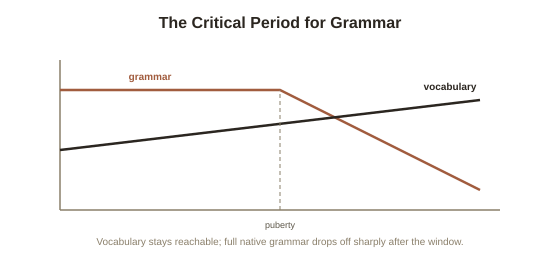

Chapter 2: The Critical Period — What Genie's Case Revealed
Chapter 1 mentioned, in passing, that cases of extreme childhood isolation show native-level grammar becoming essentially unreachable after a certain age. This deserves careful, direct treatment — both because the evidence is genuinely important for understanding what Universal Grammar actually requires to activate, and because the most famous case is a real, documented human tragedy that raises hard ethical questions about the research built around it.
Lenneberg's hypothesis, stated precisely
Neurologist Eric Lenneberg proposed the critical period hypothesis for language in 1967: that humans have a biologically bounded window, roughly from early childhood to puberty, during which language can be acquired natively and effortlessly given even minimal exposure — and that this capacity doesn't simply fade gradually after that window, but drops off sharply, leaving full native grammatical competence essentially unreachable through later learning, however intensive. This was, at the time, a theoretical proposal drawing on brain lateralization research more than on direct evidence about total language deprivation — running the actual test would require a child who received no language exposure at all until past the proposed critical window, a situation no ethical researcher could ever intentionally create. The evidence, when it eventually arrived, came from tragedy rather than experiment.
The Genie case
In 1970, a 13-year-old girl was discovered in Los Angeles after having spent most of her life confined, physically restrained, and almost entirely deprived of human language and social interaction by an abusive parent. Referred to in the research literature by the pseudonym "Genie" to protect her identity, she had no functional language upon discovery — well past the age Lenneberg's hypothesis identified as the closing of the critical window. Researchers, led initially by linguist Susan Curtiss, worked with her intensively over the following years, documenting her language development in detail specifically because her case offered a uniquely direct, if deeply unfortunate, test of the critical period hypothesis. The result matched Lenneberg's prediction with striking specificity: Genie acquired a substantial vocabulary and could communicate meaningfully, but her grammar remained persistently abnormal — she could combine words to convey information, but consistently failed to reliably master core grammatical structures (word order rules, grammatical morphemes like verb tense markers) that children exposed to language within the normal window acquire automatically and rapidly, without explicit instruction, by early childhood.

Why this specific split matters scientifically
The precise pattern Genie's case documented — vocabulary acquisition remaining possible while grammatical competence stayed persistently impaired — is exactly what distinguishes a genuine critical period for a specific cognitive capacity from a general, uniform decline in learning ability with age. If aging simply made all learning harder across the board, vocabulary and grammar should have been affected similarly. Instead, the split matched Chapter 1's Universal Grammar framework with real precision: vocabulary is closer to ordinary associative learning (pairing a word with a meaning, a capacity that persists reasonably well throughout life), while grammar, on Chomsky's account, depends on an innate, biologically time-limited faculty that needs to be activated by exposure within a specific developmental window — precisely the kind of process a critical period would be expected to gate, and vocabulary acquisition would not.
The serious ethical questions the case also raised
It's important not to treat Genie's case purely as a clean scientific data point, because it wasn't one, and later scrutiny of the research itself raised real concerns. Critics, including some of Curtiss's own research colleagues, later argued that the research team's arrangement — Genie was moved between researchers' homes, and some team members' scientific and financial interests in her case became genuinely entangled with her care — created conflicts that likely compromised both her wellbeing and the rigor of the research itself. Funding for her care and continued study was eventually cut, and her subsequent life, out of public research attention, reportedly involved a serious decline. This case is a genuine, unusually stark illustration of a tension covered elsewhere in this library's discussion of research ethics: a scientifically invaluable natural case study is not the same thing as an ethically sound research program, and Genie's case is now taught as a caution on both fronts simultaneously — what it revealed about the critical period, and what it revealed about the risks of studying a vulnerable person's tragedy as a scientific opportunity without sufficiently prioritizing her care.
Try this
Ideas for noticing or testing this in your own life.
- If you've ever tried to learn a language as an adult, notice which parts came relatively easily (vocabulary) versus which parts stayed persistently effortful (grammar, particularly things like gendered nouns or verb conjugation patterns) — a much milder, ordinary echo of the same vocabulary-versus-grammar split.
- Consider the dual lesson of the Genie case directly: a scientifically important finding and a serious ethical failure can come from the exact same research program — worth holding both at once rather than only celebrating the finding.
Worth pulling on?
A few loose threads from this chapter — if any of these genuinely grab you, that's a good sign of where to go next.
- If grammar is gated by a critical window but perception more broadly stays flexible into adulthood, that raises a related question: does the specific language you grow up with permanently shape which perceptual categories feel natural, even outside grammar entirely? → The subject of the next chapter: color and categorical perception across languages.
- The ethical tensions in studying a uniquely valuable but vulnerable human case connect to a broader pattern covered elsewhere in this library. → Already in the library: Obedience, Conformity & Situational Power's chapter on research ethics covers the broader history of this tension.